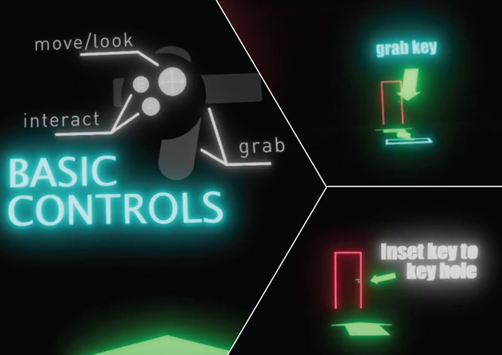
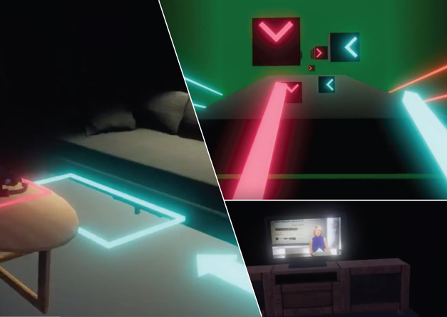
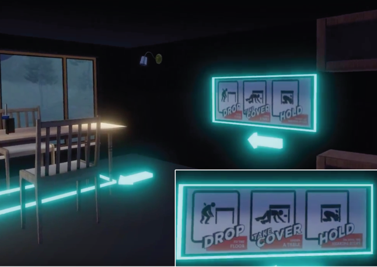
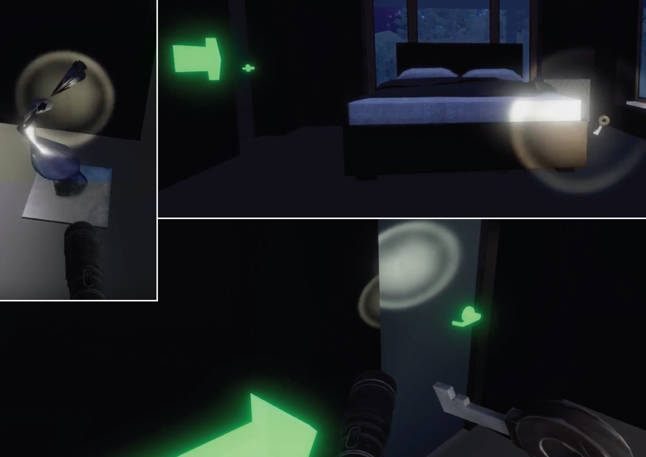

An immersive educational simulation that create the experience of an earthquake scenario.
Our project provides different form of intuitive interaction between the user and the scene.
Aimed to aid the annual ShakeOut BC drill for people to experience a simulated
earthquake environment to practice and get prepared in case of the real Earthquake.
Concept of game flow
Interaction & VR Prototype
Operation guide
3D GUI
We made the decision to guide audiences in an immersive way that creating a 3D space for them to
explore.
Following with the arrow and instructions, the audience get familiar with the basic operations.
The guide light will lead the audience to the correct position for stepping into the next scene.
The VR inside the VR
Passing through the guide scene, the audience enters a house and he/she will be guide to the table.
A VR helmet on the table will bring the audience to another VR game.
The audience was forced to exist the game and a breaking new pop up to claim that the earthquake is coming.
Game flow
Education of earthquake
The audience was guide through the instructions on the wall as well to learn about how to save his/her life
during an earthquake.
Earthquake guidelines
Exit using the key
Small puzzle
When the earthquake ends, the audience needs to find a flashlight in order to find the key in the dark
environment. As the audience found the key, he/she can escape the house by following the guide light.
Issues encountered during the implementation
The camera shake we first implemented for simulating the earthquake scene was causing motion sickness to our
playtesters. 2D GUI is also not appearing on the oculus to provide any information.
Workarounds, solutions
Use animation to animate the whole scene to shake and add rigid-body to each component in the scene to make
them react to the “physics” during the earthquake scenario. We also made 3D text and glowing signs to guide the
player around the scenes.
Thoughts on final event
The event was welcoming to everyone that cross-by and would like to experience virtual reality. Our team is
happy to see so many people are willing to participate our user study and test our project.